统一制卡流程 · 真机验证报告（2026-11-21）
关于 AI：本轮用本地假 AI（
127.0.0.1:8799，OpenAI 兼容 + 流式，故意延迟 1.8 秒）代替真实模型，避免消耗额度；界面、加载态、解析与入库都是真代码，只有生成内容来自假服务。截图均为真机实际截图，可点击放大。1挖空并入统一制卡弹窗
问题描述制卡方式只有「全文回忆 / 抽认卡 / 做题」，挖空只能去另一套旧界面。
一句话说明「选一种复习方式」多了第四张卡「挖空」；选完 AI 先出挖空稿，确认页可以直接手工挖。
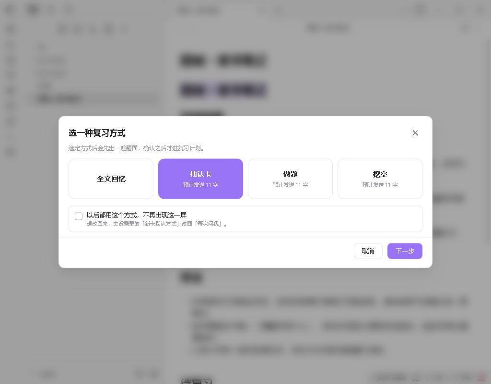
桌面 · 四张方式卡
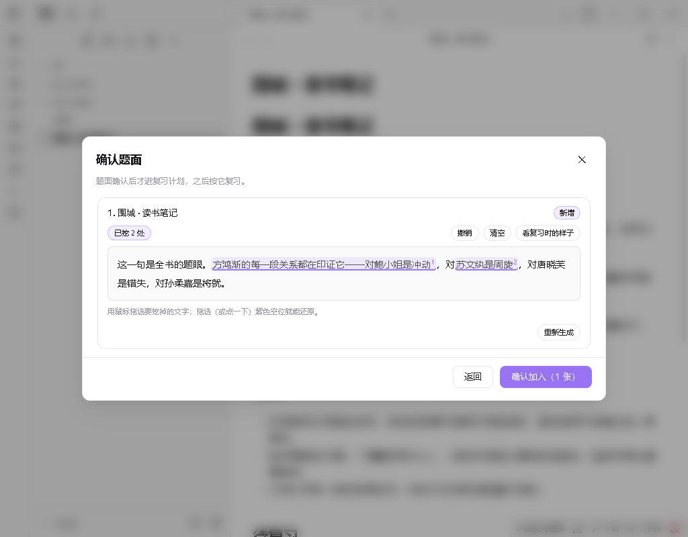
桌面 · 拖选第二处，两个空位带编号
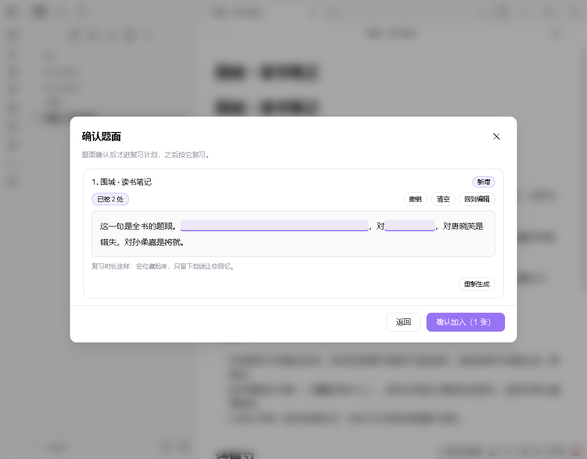
桌面 · 复习态预览（空位藏起，只留下划线）
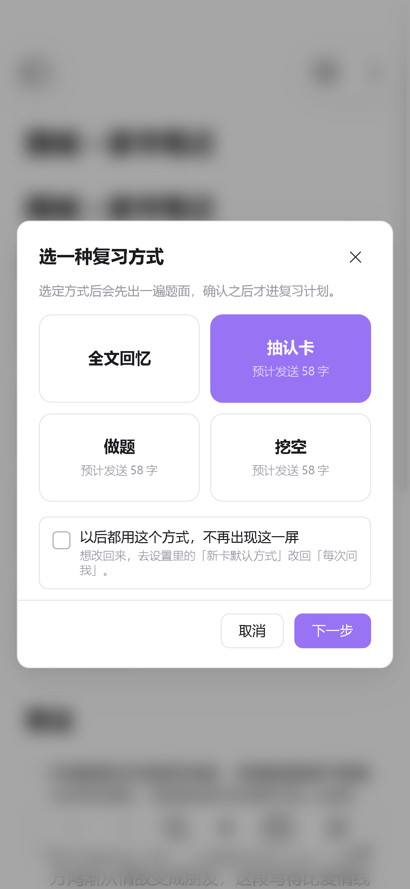
移动端 · 四张卡 2×2
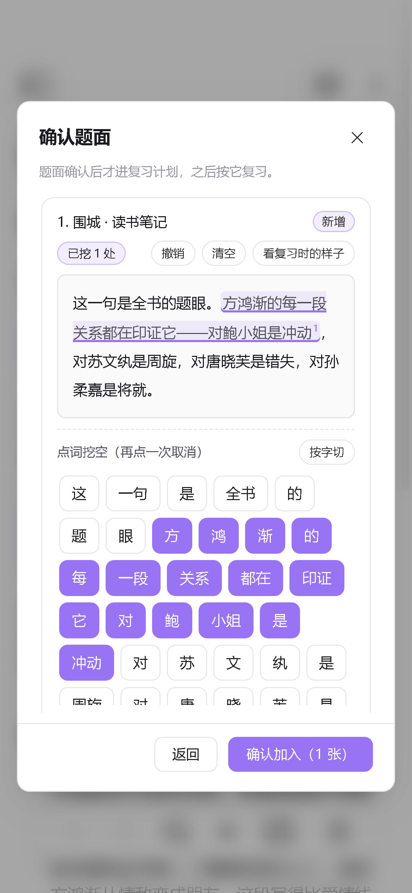
移动端 · 大号词块选择器
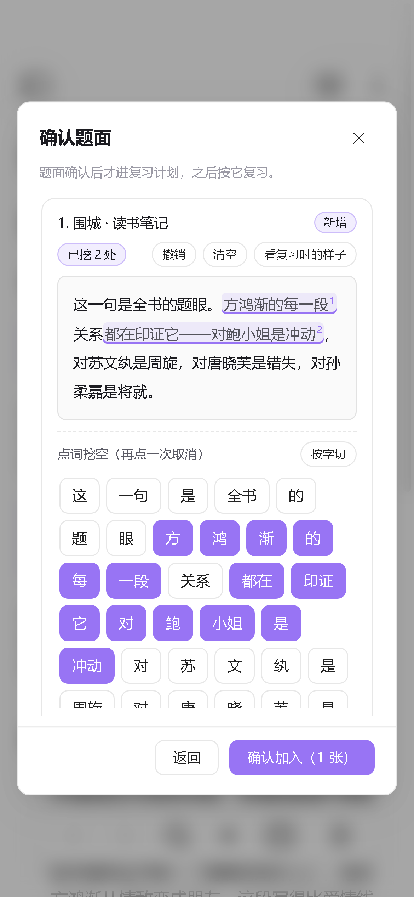
移动端 · 点「关系」只取消这个词，其余空位保留，原本合并的空被拆成 2 处
测试结论通过 桌面拖选、移动端点词两套输入方式并存，互不干扰。
2加载时不再闪上一轮内容
问题描述全文回忆 → 返回 → 抽认卡，加载中会先显示上一轮的原文，出题完成才消失；做题同样。
一句话说明换方式或重出题时先清空旧草稿，加载中只显示进度条，出完一次性长出来。
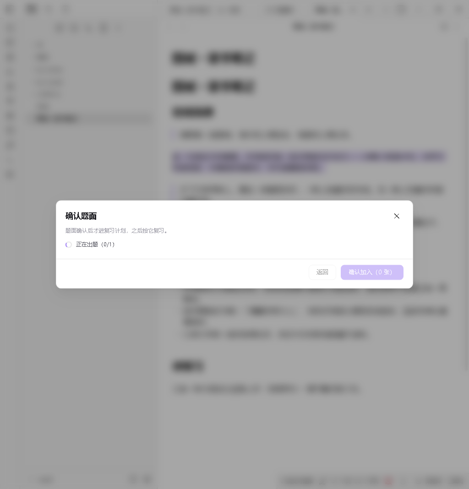
加载中（正在出题 0/1，没有任何旧题面）
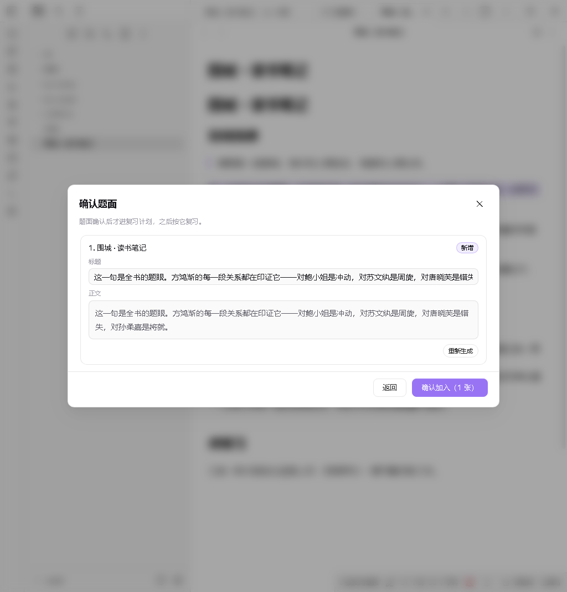
1.8 秒后出题完成，才出现卡片与「确认加入（1 张）」
测试结论通过
3补一道题后自动滚到底
问题描述补题加载完，列表停在原处，新题在下面看不见。
一句话说明补题完成后把列表滚到新补的那道题。
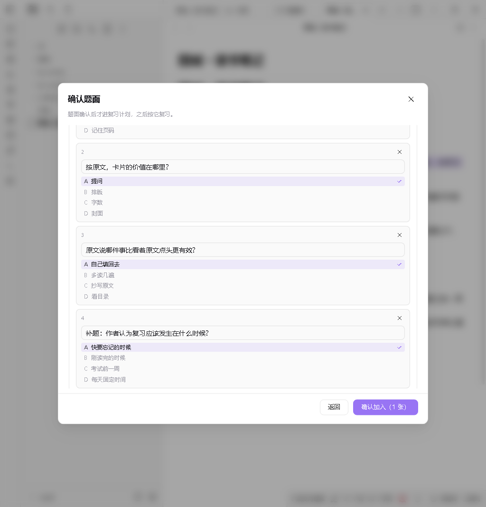
点「补一道题」后，列表自动滚到第 4 题，补出来的题完整可见
测试结论通过
4弹窗点遮罩不关闭
问题描述选要加入的内容 / 选一种复习方式 / 确认题面 / 按章节，点遮罩都不该关。
一句话说明制卡流程的遮罩与 ESC 都不响应，只认右上角 ✕ 与底部按钮。

对遮罩派发点击后弹窗仍在（截图即点击后的状态）
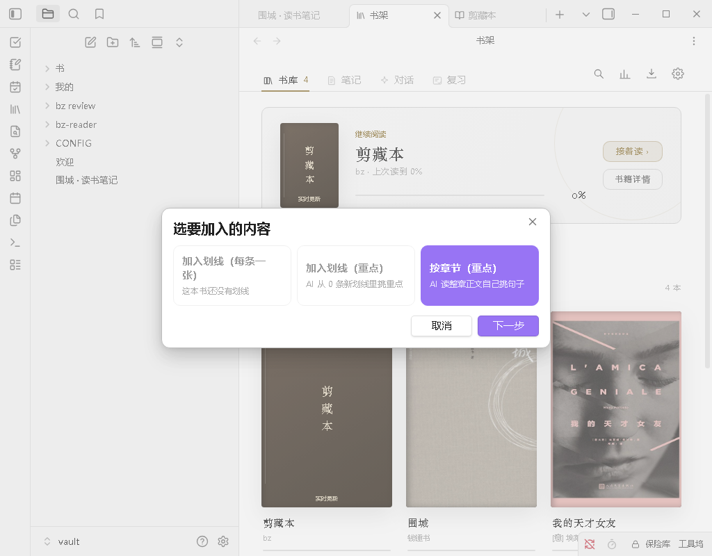
阅读器的「选要加入的内容」保持原样（Obsidian 原生 Modal）
测试结论通过 新流程显式拦截；阅读器旧弹窗维持原有行为，未改动。
5按章节面板占六成屏、章节行左右对齐
问题描述显示章节正文的滚动区太小（整个面板连四分之一都不到），标题与勾选框竖着挤成一团，底部「下一步」还被推出去，体验很差。
一句话说明面板固定占六成屏，说明 / 全选条 / 统计 / 底部按钮固定，中间章节列表吃满整块空间；标题左对齐、勾选框右对齐，一行摆平。
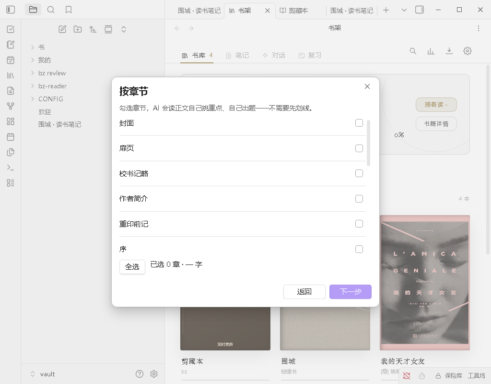
桌面 · 面板占六成屏、头尾固定、行内左右对齐
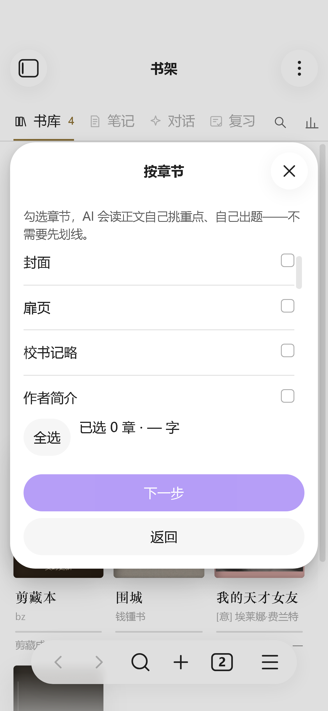
移动端 · 六成屏高 + 固定头尾 + 中间列表吃满 + 标题左勾选右
测试结论通过 壳层 CSS 会被构建加
.bzs-shell 前缀，弹窗挂在 body 上，已改内联样式；真机发现章节行被拉成空输入框、面板不到四分之一屏，已一并修掉（见代码审查第 6 条）。6文件树右键「加入复习」
问题描述Obsidian 文件树没有这个命令。
一句话说明文件树右键
.md 与文件夹会出现「加入复习」，其它类型不出现；文件夹递归加里面的笔记。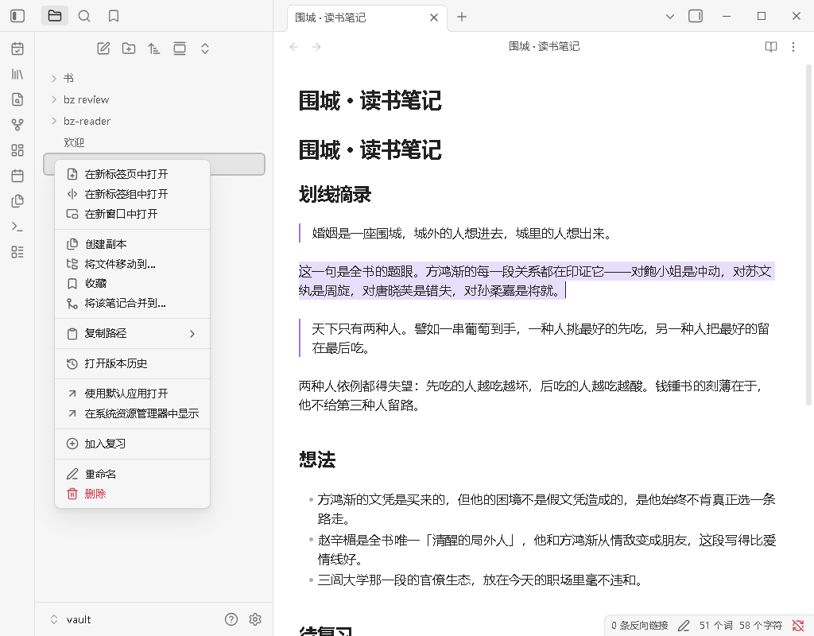
文件树右键菜单里的「加入复习」
测试结论通过 · 附已知限制 对「已在计划」的条目没做灰态（菜单同步构建，异步查询来不及），点了按已存在处理、不重复加入。
7只留一套制卡界面
问题描述Reader 一套卡片网格、Review 一套列表弹窗，后者选完直接进计划、不给看题面。
一句话说明制卡流程整体搬进 bz-review，笔记右键、重新生成、阅读器划线都走同一个弹窗；旧列表界面已删除。
笔记选中文字 → 右键加入复习 → 同一个四选一弹窗
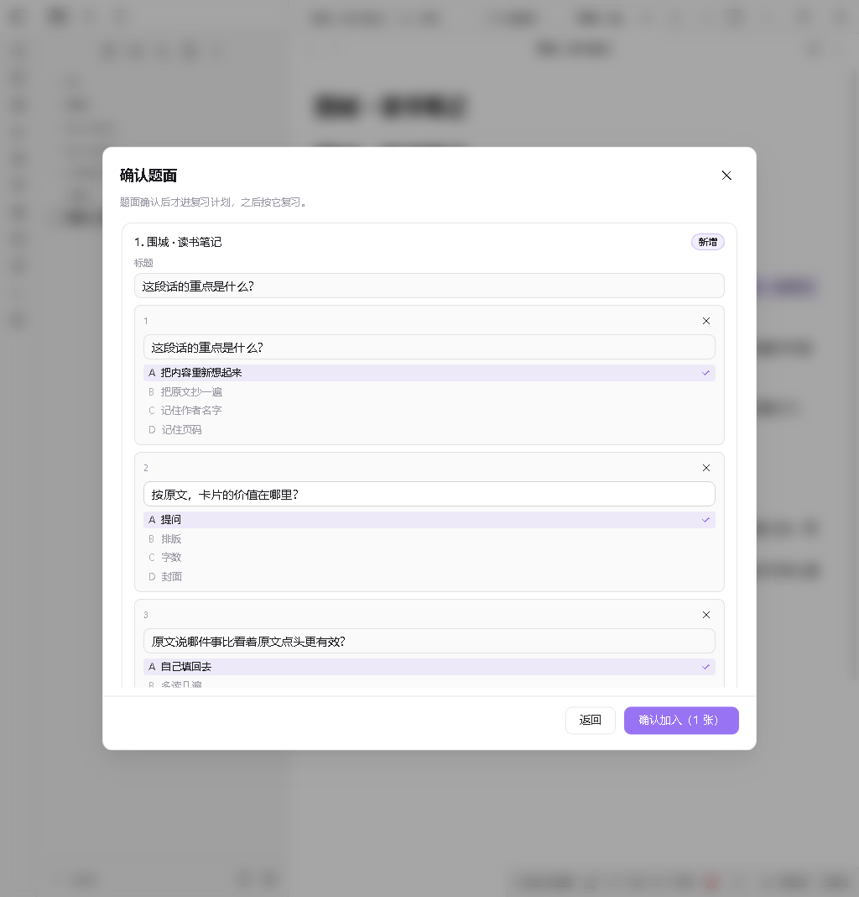
「重新生成 AI 内容」→ 同款四选一 + 确认页（做题卡示例）
测试结论通过 旧
pickCardMethod 列表弹窗代码已整段删除（src/review/card-flow.ts 只留重新生成确认面板）。移动端挖空：为什么不是「点正文里的字」
第一版是点正文里的字，字小、密集，手指会点偏，还会把已经挖好的空位误还原。改成：
- 正文只读：只展示空位，不接收点击；
- 下方词块：按词（可切「按字」）给独立胶囊按钮，约 34px 高、6px 间距；
- 点一下挖，再点一下只取消这个词：合并过的空位会被精确切开，相邻词自动并成一个空；
- 正文与词块各自保留滚动位置，点词重画不会跳回顶部。
点词挖空
只取消「关系」，其余空位与编号保持
代码审查（本次改动）
审查后修掉的问题：
- 方式卡是 div：Tab 走不到、回车选不了 → 改成真
<button>，视觉不变。 - 卡片被裁：按钮
width:100%叠加 padding 挤出容器 → 弹窗内统一box-sizing: border-box。 - 按章节布局不生效：壳层 CSS 被编译成
.bzs-shell .modal…，匹配不到挂在 body 的弹窗 → 改为内联样式。 - setCssProps 驼峰多词属性无效：
maxHeight/flexDirection等实际不生效 → 全部改成 kebab-case。 - 无用参数：
renderQuestion的cardIndex删除。 - 章节行被拉成空输入框 / 面板不到四分之一屏（两轮真机截图发现）：
pinRowLayout()钉死横向 flex、标题左、勾选框右、checkbox 固定 16px；面板固定 60vh，列表flex:1 1 auto吃满中段，全选与统计合并一行。
回归：bz-review 656 项测试全绿、tsc 通过；bz-reader 全量 4072 项测试全绿、tsc 通过；两侧产物均构建通过。
已知限制
- 本轮用本地假 AI，未接真实模型；真实模型的出题质量不在此报告范围。
- 移动端分词依赖
Intl.Segmenter，人名可能被拆成单字（如「方鸿渐」），可切「按字」或按词逐个点，功能不受影响。 - 文件树「已在计划」灰态未做（原因见第 6 项）。
- 移动端模拟下同一本《围城》只解析出「封面」一节，桌面端正常列出 6 节；疑与移动端模拟的 EPUB 解析有关，待真机再确认（不影响本项布局验证）。